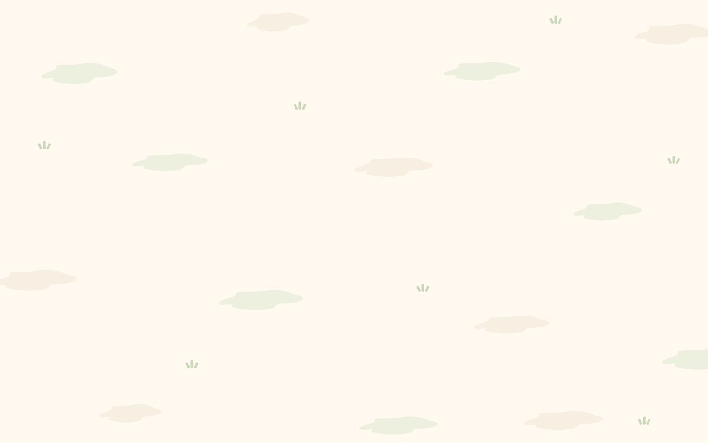
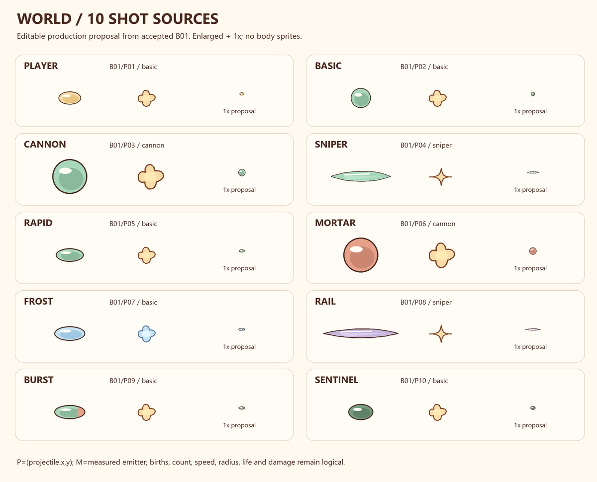
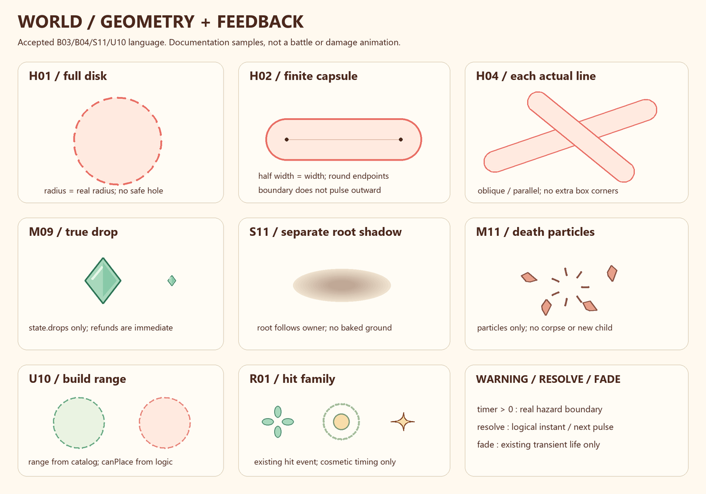
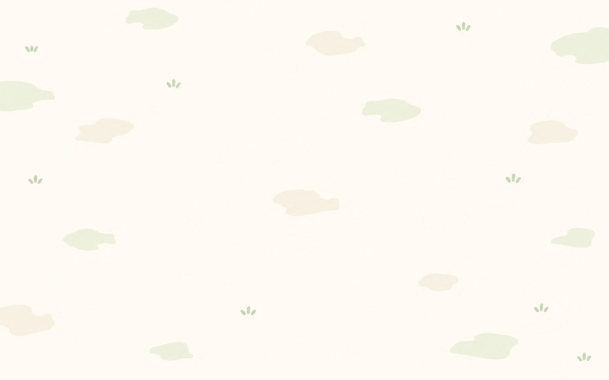

GeoGuard / World r01
Read-only inspection and production proposal. Submitted for review; no runtime integration, body sprite, gameplay change or device validation. Source art is approved; these new editable samples await approval.
Implementation plan · Cell, identity and 95-skill coverage · Sealed packet

ground-preview · SVG editable proposal, click for vector
projectile-preview · SVG editable proposal, click for vector
geometry-preview · SVG editable proposal, click for vectorApproved source references
Original references remain outside this revision; these links do not copy or alter the source boards.
Approved BG01

Approved shots B01

Approved hazard B03

Approved feedback B04